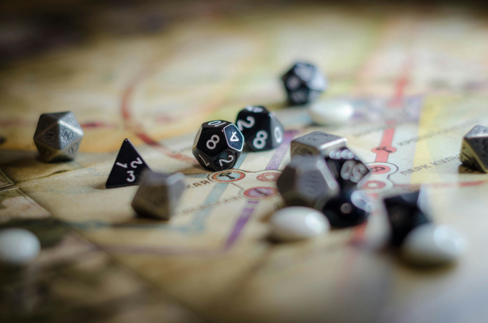

A história do RPG de mesa
O Role-Playing Game (RPG) de mesa é um dos passatempos mais fascinantes e criativos já desenvolvidos. Ele combina interpretação de personagens, estratégias táticas e narrativa colaborativa, permitindo que os jogadores criem histórias únicas. Mas como essa forma de entretenimento surgiu? Vamos explorar a história do RPG de mesa, desde suas raízes até sua popularidade nos dias atuais.
As origens do RPG
O RPG de mesa tem suas origens em jogos de guerra (wargames), que simulavam batalhas militares. No século XIX, os exércitos europeus utilizavam versões primitivas desses jogos para treinar estratégias. No entanto, a grande revolução ocorreu nos anos 1960 e 1970, quando entusiastas começaram a transformar os wargames em experiências mais narrativas e personalizadas.
O surgimento de Dungeons & Dragons
Em 1974, Gary Gygax e Dave Arneson lançaram Dungeons & Dragons (D&D), considerado o primeiro RPG de mesa. Inspirado em jogos de guerra e literatura fantástica, o jogo introduziu mecânicas inovadoras, como classes de personagens, evolução por experiência e um mestre do jogo (Dungeon Master) para narrar a aventura. D&D rapidamente se tornou um fenômeno, influenciando inúmeros outros sistemas.
A expansão do gênero
Nos anos 1980 e 1990, diversos sistemas de RPG surgiram, abrangendo temas variados além da fantasia medieval. Jogos como Call of Cthulhu (1981), baseado na obra de H.P. Lovecraft, Vampiro: A Máscara (1991), focado em horror gótico e intriga política, e GURPS (1986), um sistema genérico e modular, ampliaram as possibilidades do RPG
Com o tempo, o RPG de mesa também começou a ser associado à cultura nerd e enfrentou resistência moral de alguns grupos que viam o jogo com desconfiança. No entanto, sua popularidade continuou a crescer, especialmente entre fãs de literatura fantástica, quadrinhos e videogames.
O impacto da era digital
Nos anos 2000, a internet trouxe novas formas de jogar RPG de mesa. Fóruns, grupos de e-mail e programas como Roll20 e Fantasy Grounds permitiram que jogadores se conectassem virtualmente. Além disso, transmissões ao vivo de sessões, como Critical Role, ajudaram a popularizar o hobby para um público ainda maior.
RPG hoje e o futuro do hobby
Atualmente, o RPG de mesa está mais popular do que nunca. Empresas como a Wizards of the Coast (responsável por Dungeons & Dragons) continuam a inovar, e sistemas independentes ganham espaço com novas mecânicas e temáticas diversificadas. O RPG também está sendo usado em educação, terapia e desenvolvimento criativo.
O futuro do RPG de mesa promete continuar evoluindo, misturando tecnologia e tradição para oferecer experiências cada vez mais imersivas e acessíveis para todos os tipos de jogadores.
E você, já teve alguma experiência com RPG de mesa? Compartilhe suas histórias nos comentários!